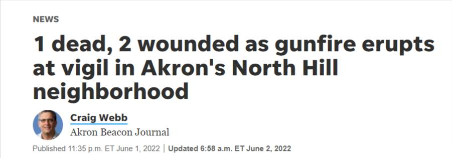

Timeline photos
Most of these shootings that happen in Akron and the rest of American cities don't happen with AR-type weapons. THEY HAPPEN WITH HANDGUNS.
Most gun crimes are committed with handguns.
You'll notice that Democrats never mention handguns. And that's how you know that they don't actually care about gun violence. They just care about political talking points.
I'M GOING TO TELL IT TO YOU STRAIGHT:
Your government isn't going to do one damn thing to help gun crime in America. They won't fund mental health initiatives. And even if they outlaw AR rifles, it's the handguns that kill the most people. (A handgun would be a better weapon for close-quarters killing in a school anyway. These kids just think an AR is cool. The standard magazine for the Glock 19 holds 15 rounds. Do you know how fast you can change a mag? You can also get magazines with 17, 19 and 33 rounds for the Glock 19.)
YOUR COMMUNITY MUST STEP UP.
Stop looking to the police and government to solve your problems. Create community watch groups. Learn self-defense. Take the CCW course even though you don't need to.
The Democrats have promised you that they will take care of everything for you. You can see very clearly how that's working out.
You have to take care of the problems in your community yourself.